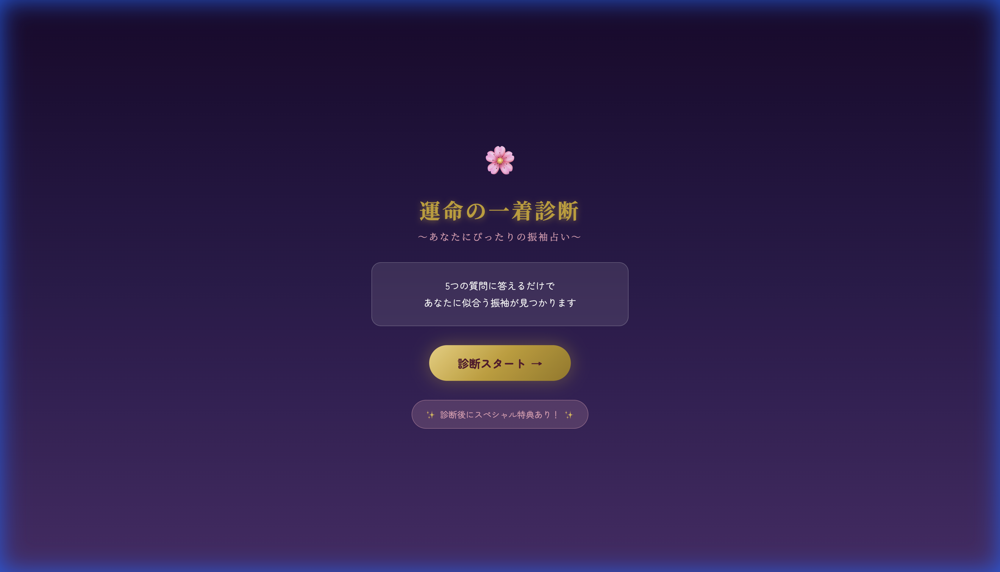
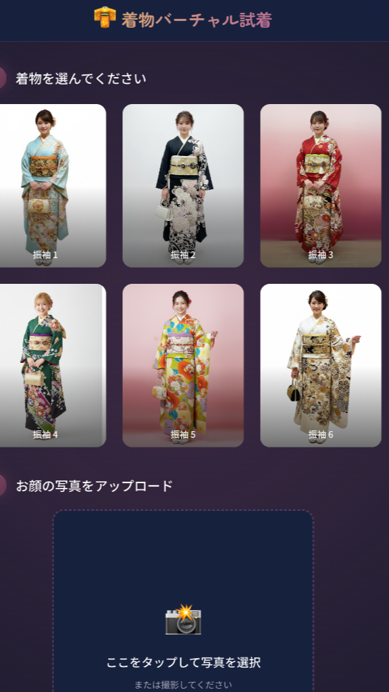
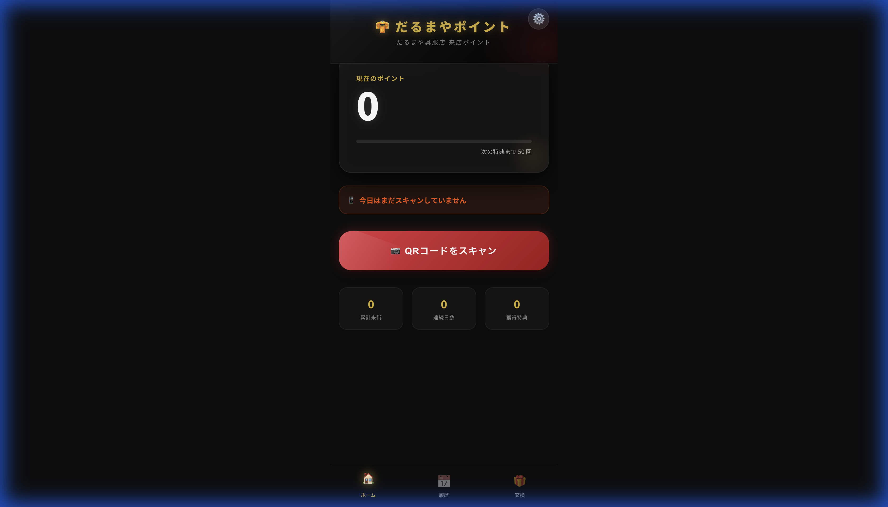

AIと最新のWebテクノロジーを活用し、着物体験をもっと身近に。
診断・試着・ポイント管理 — すべてスマートフォンから。

運命の一着診断
5つの質問に答えるだけで、あなたにぴったりの振袖タイプを診断。成人式の振袖選びをもっと楽しく、パーソナルに。

AIで着付けシミュレーション
お顔の写真をアップするだけ。AIがリアルタイムで振袖を着付け。来店前に気になる振袖をバーチャル試着体験。

だるまやポイント
来店時にQRコードをスキャンしてポイントを貯めよう。貯まったポイントは商品券と交換可能。PWAでアプリのようにご利用いただけます。
最新のAI・Web技術を駆使して、着物業界のデジタル体験を革新しています。
生成AI活用
アプリ風体験
リアルタイムDB
高速デプロイ